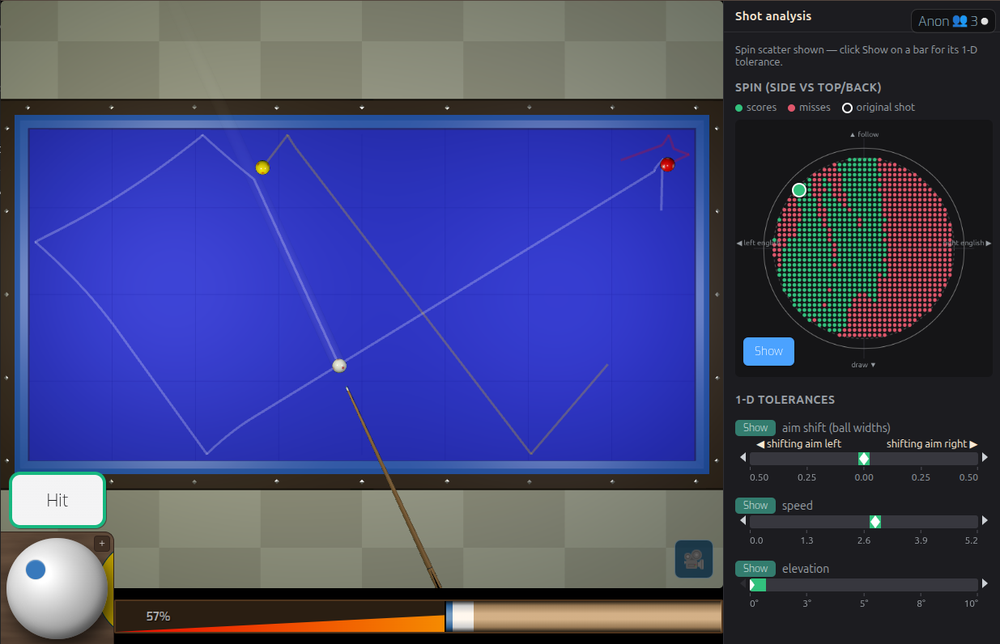
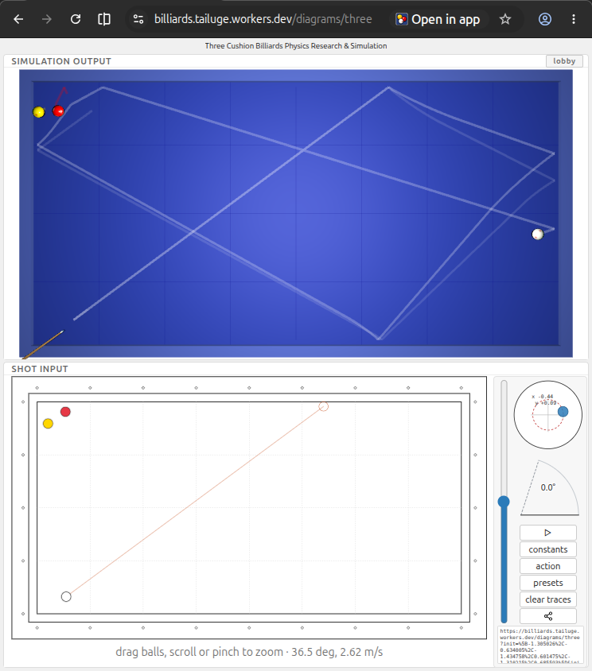
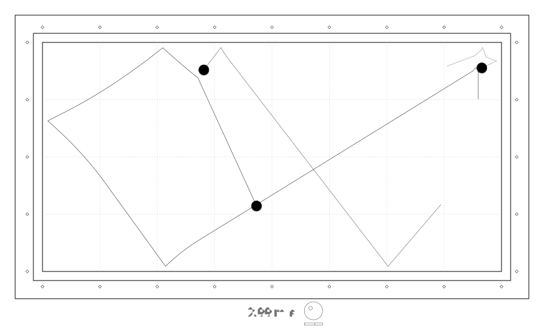
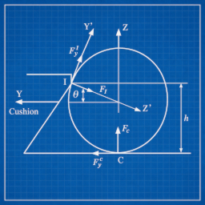

インタラクティブなスリークッションのショット分析と練習
このツールでは、予想経路を一本描くだけでは分からないほど詳しく、スリークッションのショットを調べられます。配置を決めてショットを選び、狙い・撞点・力加減・キューの傾きを少しずつ変えて、結果の違いを確認してください。台の横にある分析パネルには、元のショットの周辺で成功した例と失敗した例が表示されます。手球の表面に広がる撞点の分布と、狙い・力加減・キューの傾きの許容範囲を見ることで、どの要素が結果に最も影響するかが分かります。
重要な考え方：このショットはどれほど繊細なのか？
少し狙いや力加減がずれても成功する、許容範囲の広いショットがあります。一方で、非常に繊細なショットもあります。撞点や厚み、力加減がほんの少し変わるだけで、手球はまったく違う方向へ進みます。

ショット分析を使えば、この繊細さを実際に確かめられます。配置はそのままに、まず狙いを少しずつ動かしてみましょう。次に力加減を変え、その後で撞点やキューの傾きを変えます。それぞれの変化が軌道や成功率にどう影響するかを確認できます。
実際の台でこのショットを撞く際、何を調整すべきかを理解するための実践的な方法です。
結果だけでなく、ショット全体を見ましょう
分析パネルには、元のショットと、その周辺で設定を変えたショットが表示されます。緑は成功、赤は失敗、白い印は現在のショットです。分布図は手球表面全体に撞点を展開して示します。左右は横回転、上下は押し球と引き球を表し、各バーの白い目盛りは元のショットの値です。
結果は、このショットの許容範囲マップです。どこまでが成功範囲なのか、理想的なショットから外れると結果がどれほど早く変わるのかを確認できます。一度に全範囲をスキャンするのは一項目だけです。バーの目盛りを選ぶと、分布図の代わりにその項目の一次元スキャンが表示されます。評価したすべての設定はCSVでダウンロードできます。
調整すべき要素を学ぶ
狙いの誤差（ボール幅単位）
ショットが決まらなくなるまで、仮想ボールのラインをどれだけ動かせるかをボール幅単位で示します。左右の表示は台の向きに対応しています。正確な狙いが必要なショットと、多少ずれても成功するショットを見分けられます。
撞点（横回転・押し球／引き球）
手球表面のどこを撞くかによって、横回転・押し球・引き球の結果がどう変わるかを調べます。一つの撞点を暗記するのではなく、実用的な結果が得られる撞点の範囲を見つけましょう。
力加減
この配置が力加減にどれほど敏感かを試します。正確な力で所定の位置に到達する必要があるショットもあれば、かなり広い範囲で成功するショットもあります。
キューの傾き
キューを水平に近い状態から立てた状態まで変え、傾きが軌道と結果に与える影響を確認します。キューの傾きが重要なショットで特に役立ちます。傾きのバーを選ぶと、キューの傾き調整も開きます。
練習を学びにつなげる
このシミュレーターは、スリークッションを研究するための実験室です。試合で見つけた興味深い配置を再現し、詳しく調べてみましょう。別の方法を試し、狙い・撞点・力加減の成功範囲を探します。結果を図として保存しておけば、あとで見返せます。
「このショットをこう撞く」と覚えるだけでなく、なぜ決まるのか、少しずれたらどうなるのかを自分で確かめられます。

説明・共有用の図を作る
ショットの配置は、自分のノートや練習資料、ビリヤードの記事に使う図として作成できます。 図をエクスポートを使うと、分析した配置をきれいなSVG画像に変換できます。拡大しても鮮明なベクター画像なので、ページに掲載したり、練習用に印刷したりできます。
このシミュレーターはショット練習だけでなく、スリークッションの知識を作り、共有するためにも使えます。指導者、ブロガー、コミュニティのメンバー、研究者など、幅広い人に役立ちます。

ビリヤード台から練習ノートへ
役立つ配置を、一度撞いただけで忘れてしまう必要はありません。ショットを分析して分かったことを記録し、結果の図を次の練習の参考にしましょう。試合で出会った難球、システムショットの配置、もっと理解したいショットなど、自分だけの配置集を作れます。
実際の台での練習を置き換えることが目的ではありません。練習と練習の合間をより有意義にし、ショットを試し、図にし、考えられるようにすることが目的です。
さらに深く研究したい方へ
このシミュレーターは、ボール・クッション・摩擦・回転の物理モデルに基づいています。そのため、静止画だけでは答えにくい疑問も調べられます。
- 力を弱めると軌道はどれほど変わるのか？
- 的球に届かなくなるまで、横回転をどれだけ減らせるのか？
- どれほど正確に狙う必要があるのか？
- このショットの難しさを実際に決めている要素は何か？

ショットの値を変えて再実行し、結果を確認してみましょう。
ショットを決めるだけでは練習になりません
優れた練習ツールは、何を練習すべきかを教えてくれます。許容範囲の狭いショットは精度が重要だと示し、許容範囲の広いショットなら技術の別の要素に集中できると教えてくれます。
サイトのスリークッション試験や練習モードと組み合わせると、ショット分析によって ショットを撞く → 分析する → 練習する → 自分で試すという 一貫した流れを作れます。